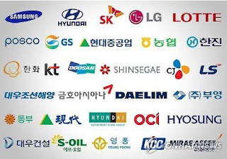
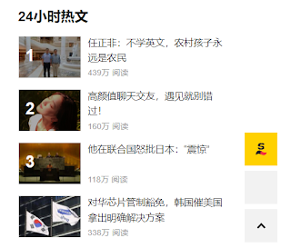

资料搜寻：韩国财阀干政的程度有多高？ - Data Search：To what extent do South Korean chaebols interfere in politics?

下午和朋友闲聊，她问我，韩国的财阀干政现象是否很严重？这个问题我不好回答，所以我打算简单搜索一下资料查询这件事情。在搜索资料之前，我只零星地听到一些有关韩国财阀干政的新闻，不过对其完全不了解。
In the afternoon, I was having a casual chat with a friend. Suddenly she asked me whether the phenomenon of Korean chaebols interfering in politics was severe. Unsure how to answer, I decided to do a little research on the matter. Prior to this, my knowledge about chaebols meddling in politics was limited to a few sparse news reports that I had heard occasionally.
首先，先简单在维基百科检查一下韩国的情况。韩国的民主指数在世界的排名一直在20-30名左右，相当不错；而2022年韩国的人均GDP是34000美元，也是标准的发达国家。中英文查找资料得出来的数据都一致。
First of all, I checked the situation in Korea on Wikipedia. Its democracy index worldwide ranking has consistently been between 20-30, which is quite good. Furthermore, Korea's GDP per capita in 2022 is $34,000, marking it a well-developed nation. Both Chinese and English resources provide consistent data.
然后，用汉语在google上搜索“韩国”和“财阀”。扑面而来的是腾讯网，搜狐新闻，网易新闻，知乎等网站 描写韩国财阀的猖獗 的新闻。点开标题为“韩国：一个被财阀控制的国家，总统，明星无一幸免”的搜狐新闻网页一看：里面举了相当多的例子，比如张紫妍案，黄由美案，来论证韩国财阀的权力有多大。文章最后的结论是 “韩国与财阀共存，一个被金钱权利所左右的国家，百姓想寻求公道，大概会令人发笑吧。” 我又看了几篇其他新闻媒体的新闻，有些语气没有那么言之凿凿，但大多大差不差。说实在的，这种新闻虽然一看就很离谱，但是它们实在太多了，三人成虎，不了解政治的读者很难明辨这种言论。
Later, I searched for "Korea" and "chaebol" on Google using Chinese.
Dominant search results were news reports from Tencent, Sohu, and
NetEase, as well as discussions on Zhihu, all of which depicted rampant
activities of the chaebols. One Sohu news report even proclaimed: "South Korea: A nation
under chaebol control, no Presidents, no celebrities spared". The
article provided numerous examples, such as the Jang Ja-yeon case and
the Hwang Yu-mi case, to illustrate the immense power of South Korean
chaebols. The conclusion of the article states: "South Korea
coexists with chaebols, a country swayed by the power of money; the idea
that the people can seek justice is almost laughable." I also
read several other news reports; while some weren't as assertive, the
overall sentiment was similar. Honestly, although such news
seems outrageous at first glance, there are so many of them that it
becomes difficult for readers unfamiliar with politics to discern the
truth.
此外，我忍臭跳一次粪坑：打开抖音，搜索“韩国”和“财阀”，因为短视频也是中国人获取信息的主要渠道。抖音上没有太过评论韩国财阀干政的视频，抖音人更关注的是财阀们玩弄的女明星有多漂亮。随便点开几个视频看了一下，不是在讲电影，就是在搞软色情，很少有聊政治的视频。即使我加上“干政”词条也没有很明显的变化。仅有的几个讲财阀干政的视频，也干巴巴的，观感甚至不如搜狐新闻那片文章的冲击感强。我也试图在小红书上搜索“韩国”和“财阀”，但它似乎不让未登录的人搜索。
Additionally, I took the plunge into the world of the Chinese app Douyin: I searched for "South Korea" and "chaebol," considering that short videos have become a major source of information for Chinese citizens. Much to my surprise, there weren't many videos discussing the political interference of the Korean chaebols, as most Douyin users seemed more interested in how beautiful the female celebrities manipulated by these chaebols were. Most of the videos I stumbled upon were either about films or subtly erotic, with little to none focusing on politics. Adding "political influence" to my search didn't affect the results significantly. The few videos discussing the chaebols' political influence were rather dry and lacked the sensational impact of a certain Sohu news article. I also attempted to search for "South Korea" and "chaebol" on another app called Xiao Hong Shu, but it seemed it did not allow unregistered users to search.
搜狐新闻有时会含有大量的花边新闻，抖音又喜欢把美女和恶臭言论拌在一起，还是看一眼相对中立客观的知乎吧。在“韩国财阀有多牛?”问题下，知乎用户给出了不一样的回答：第一篇回答用讲故事的语气讲了财阀们的各种风流秘辛，以及李美兰案。但第二篇回答就大谈特谈韩国政府的权力之大。粗略看一眼，这个问题下面的高赞回答中，认为“韩国财阀严重干政”与“还是政府权力更大”的比例大约是6比4。其中不乏听起来十分言之有理的言论。
Sohu News sometimes contains a plethora of unnecessary fluff news, and Douyin enjoys mixing visuals of attractive women with offensive remarks — perhaps it's better to resort to a comparatively neutral and unbiased platform like Zhihu. On the question "How powerful are Korean chaebols?" Zhihu users have provided varied responses. The first post narrates the scandalous and private lives of these conglomerates and the Lee Mi-ran case with a storytelling flair. The second post, however, places great emphasis on the enormous power of the Korean government. At a quick glance, in the most upvoted responses to this question, the proportion believing that "Korean chaebols have excessive political influence" versus "the government's power is greater" is roughly 6 to 4. Among these, there are quite a few solid and convincing arguments.
插句题外话，虽然我一直对知乎评价不高，但它确实是中国最适合辩论的平台了，大家围绕者一个议题，互相发表自己的看法，而有道理的就会被顶上去。如果使用者的素质都很高，那知乎绝对能 像法国沙龙文化一样 为广大网友启蒙。
On a side note, despite my critical view of Zhihu, I must admit it is the most suitable debating platform in China, where users can voice their opinions on a topic and relevant comments are upvoted based on merit. If every user is of high quality, Zhihu indeed has the potential to emulate French salon culture, enlightening the extensive internet user community.
虽然知乎几乎是中文网络中最客观、公正的新闻平台，但它仍然会屈服于舆论，而且知乎答主们往往更擅长秃笔生花，使用话术进行论证。想要获得更准确的信息，一定是去英文媒体上搜索。
Despite Zhihu arguably being the most objective and impartial platform in Chinese cyberspace, it can still be swayed by public opinion. Answers tend to use rhetorical strategies and can often be manipulative. For the most accurate and unbiased information, it's best to switch to English media outlets.
先从英文维基百科开始：“韩国政治”词条并没有提到韩国明显被财阀控制，韩国政治丑闻列表里虽然提到韩国政府收取财阀的现金，但没有与财阀干预政治相关的丑闻。（韩国的）财阀这篇文章倒是讲了韩国财阀与政府的关系。不过讲的更多的是财阀贿赂政府，以及政府认为财阀的重要性。牛津政治词典提到从97年经济危机之后开始，韩国政府就一直对财团进行改革。牛津政治词典甚至暗示这种监管和改革是韩国独有的，并且是过头了的。
The English Wikipedia page for "Politics of South Korea" does not mention the overt control of South Korea by chaebols (conglomerates). Inthe list of political scandals in South Korea, the government's acceptance of money from the chaebols is mentioned, but does not link it to political intervention. The "chaebol" article discusses the relationship between the South Korean chaebols and the government, but focuses more on chaebols bribing the government and the government recognizing the importance of chaebols. The Oxford Dictionary of Politics mentions that since the economic crisis of 1997, the South Korean government has been reforming these conglomerates – even implying that such regulation and reform are unique to South Korea, and possibly excessive.
但是，在维基百科之外，一些文章确实谈到了政府官员与财阀的不良关系，cfr（美国外交关系协会，美国的外交政策智库）的这篇文章提到了政客向财阀寻求财务支持，政府官员（如朴槿惠）向财阀索贿，布朗评论的文章提到财阀可能会通过缴纳罚款得到政府的特赦。三星是韩国最大的财阀，三星的董事长李健熙在1990年代被判犯有贿赂和欺诈罪。但他没有入狱。2017年，李健熙的儿子李在镕被判犯有贿赂和贪污罪，但只在监狱里服刑了6个月就获得假释，在之后被总统赦免。赦免的理由是：“有助于维持经济”，但政府完全无法证明自己没有收取酬金。还有一些文章提到了韩国存在三五法则，指无论罪行大小，司法系统对财阀创始人家族往往只会判处三年有期徒刑，缓刑五年，如果在此期间不再发生违法行为，则可以免除。这说明财阀确实一定程度上影响了韩国的司法系统，韩国至少没有做到司法独立。
However, outside of Wikipedia, some articles indeed talk about the unsavoury relationship between government officials and the chaebols. An article by the Council on Foreign Relations (CFR) discusses politicians seeking financial support from chaebols, and government officials (such as Park Geun-hye) soliciting bribes. A commentary by Brown Political Review that chaebols may receive government pardons by paying fines. Samsung, the largest chaebol in South Korea, had its chairman Lee Kun-hee convicted of bribery and fraud in the 1990s, but he did not go to jail. In 2017, his son Lee Jae-yong was convicted of bribery and embezzlement, but was released on parole after only six months in jail and later pardoned by the president. The pardon was justified on grounds that it would "help sustain the economy", but the government could not prove that it did not receive any bribes. Some articles also mention South Korea's "3-5 rule", which often results in chaebol family receiving only three-year prison sentences, with probation for five years, if they do not offend again during that time. This implies that the chaebols do, to some extent, influence the South Korean judicial system which hasn't maintained full judicial independence.
总结我所查找的资料：朝鲜战争结束后，韩国政府开始扶持财阀，财阀也为韩国带来了经济上的腾飞。但后来，财阀成为了韩国政治中一股不可忽视的力量，且其对政治的影响是好坏参半的：一方面财阀提供工作岗位，为政府交税，为竞选提供资金，但另一方面财阀与政府之间官商勾结，互相影响。而民众虽然对财阀有怨言，但又认为财阀为韩国带来经济发展，可以增强他们的民族自信心。财阀与政府是处在动态斗争中的，即政府改革财阀的同时财阀游说政府。而在此基础上又不乏财阀与政府的合作，包括一些不光彩的合作。财阀作为韩国政治的参与者确实在干政，但财阀与政府的势力不断抗衡，我们不能说财阀主导了政府。
In summary, after the Korean War, the South Korean government began supporting chaebols, which brought about an economic boom. But later, the chaebols became a force to be reckoned with in Korean politics. Their influence on politics is mixed – they provide jobs, pay taxes, and fund elections, while also forming an unhealthy relationship with the government. Despite public grievances against chaebols, they are seen as a source of economic development and national pride. Chaebols and the government are engaged in a dynamic struggle, with the government aiming to reform the chaebols while the chaebols lobby the government. This dynamic also includes clandestine collaborations between the two parties. Although the chaebols, as participants in Korean politics, have influenced the government, their power is counterbalanced by the government, making it inaccurate to say the chaebols control the government.
多说一句，腾讯网，搜狐新闻，网易新闻等新闻平台明显夸大了事实，并大量掺入自己主观的观点。抖音虽未正面回答，但它的视频以韩国财阀无视法纪为前提，从侧面加强了用户对韩国的错误的刻板印象。知乎还算客观，但仍有先射箭后画靶之嫌。相比之下，英文媒体，无论是措辞，还是内容，都客观了很多（而且网页侧边也没有像搜狐新闻一般的贩卖焦虑&软色情&震惊体的小广告）。
To add a note, Chinese news platforms such as Tencent, Sohu News, and NetEase News have clearly exaggerated the facts and injected their subjective viewpoints. Douyin has not directly responded, but its videos premise on the disregard of laws by Korean chaebols, subtly reinforcing users' misconceptions about Korea. Zhihu is more objective, but it shoots conclusions first and is filled with a sense of superiority from right-wing elitism. In comparison, English media are much more objective, both in terms of language and content. (And there are no small ads on the sides of webpages peddling anxiety, soft pornography or shock culture like on Sohu News.)
